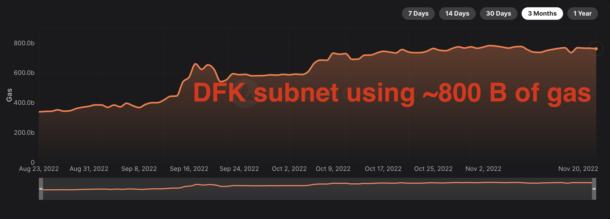
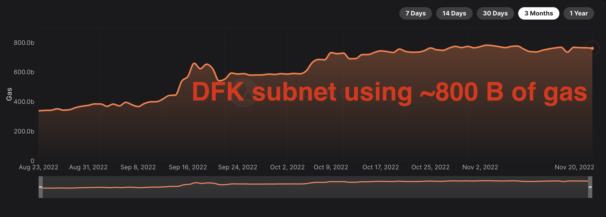
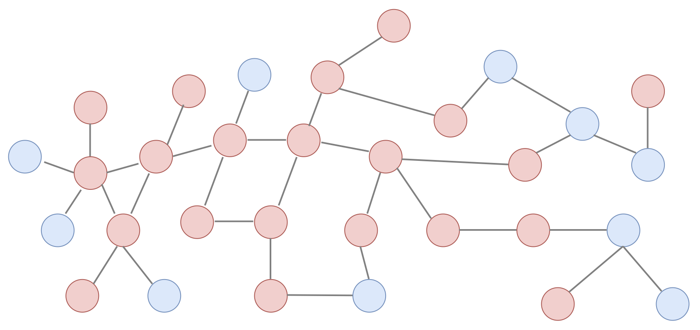
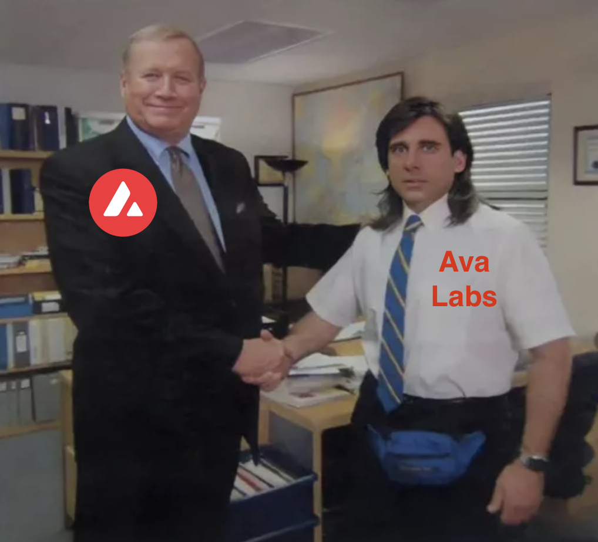

Avalanche 서브넷 기술 소개
Who am I?
- 이규호 (Gyuho Lee)
- Protocol Engineer, Ava Labs
- prev. Senior SDE, AWS EKS
- Top contributor to etcd
- github.com/gyuho
- twitter.com/gyuhox
- t.me/leegyuho (Telegram)
- linkedin.com/in/gyuho
Vision #1
If we are to build new financial foundation for the whole world, the system must be decentralized and censorship-resistant.
Vision #2
If we are to digitize all assets in the world, we need horizontally scalable solution.
Vision #3
If we are to commoditize blockchains, we must achieve web2-like reliability and flexible architecture to support app-chains.
Steps
- System that scales to millions of nodes
- Consensus with sub-second finality
- Flexibility to support app-specific chain
News

Yes. Avalanche solves scalability while decentralized with novel consensus algorithm and subnets.
What is Avalanche?
Overview
Avalanche ($AVAX)
- Mainnet launched in Sep 2020
- Supports Ethereum Virtual Machine (EVM)
- Novel Consensus Algorithm: Snowman
- Proof-of-Stake
- Fast and Scalable L1 (>2K EVM TPS)
- Reliable (no downtime, no reorg)
- Platform for deploying "Subnets"
Avalanche Today
>3.6B requests (a day, July 2022) with ~80ms latency


Avalanche Today
Subnet effect -- scales without congestion

Avalanche Today
DFK subnet using more gas than Polygon and BNB
 

Avalanche Today
Subnet horizontally scales!
Avalanche Consensus + Subnets
- Consensus with sub-second finality (Fast)
- Decentralized with >1,200 validators (Secure)
- Subnets for application specific chains (Isolation)
Avalanche Consensus ☃️
Snowman Protocol
Consensus
"Assume a collection of processes that can propose values. A consensus algorithm ensures that a single one among the proposed values is chosen." Leslie Lamport, Paxos Made Simple (2001)
Should this transaction be placed in a block or not?
PoW or PoS is NOT a consensus mechanism!
Consensus Until Now
Classical (Lamport 1998, Paxos/Raft/etcd)
- Quick finality but does not scale
- Quadratic message complexity
- Permissioned, requires precise membership
Consensus Until Now
Nakamoto (Bitcoin 2008)
- Robust, no need for precise membership
- High latency, low throughput
- Wastes energy, not green, not sustainable
Avalanche Consensus Family
- Published in 2020
- Instant finality, low latency (~1 sec)
- High throughput (>1,500 TPS on EVM, 5K on X-chain)
- Scales >10-million nodes
- Robust, no need for precise membership
- Leaderless
- Quiescent, green, sustainable
- Inspired by epidemic protocols and gossip networks
- New idea: deliberately metastable
Avalanche Sustainability

Binary Consensus
- Pick one
red /blue -- no correct answer - Adopt the majority color by repeated sub-sampling
- Consensus results in the entire network agreeing on either
red orblue - Even with 50/50 split, random perturbation in the sampling results in a single value being selected
At the beginning, pick any color (no correct answer)
Radomly sub-sample the network

"Red" is the majority from the sample
Adopt the majority color, "red"

Repeat this random sampling in parallel, in all nodes
Repeated random sampling perturbs conflicting state
Sequence of metastable process of random sampling
All converge to the same value (agreement)

Fast Finality
Avalanche == no block re-org, no longest chain rule
- Re-org in game? May lose item after tx revert
- Re-org in bridge? Must wait longer for source chain
- Re-org in payment? May lose money for goods
Avalanche Subnet üî∫
What is Subnet?
Primary Network == Special Subnet
- X-chain runs on DAG, used for exchanging assets
- P-chain coordinates validators and subnets
- C-chain executes EVM contracts with ETH RPCs
Subnet validator must validate primary network!
Subnet (sub-network)

Subnets

Subnet (sub-network)
Custom networks running on Avalanche
- Security: Choose who and how many can participate
- Compliance: Comply with specific industry, jurisdiction, regulatory environment (KYC)
- Custom Execution: Common VM (subnet-evm with custom gas token), custom VM optimized for own use case (key-value store, gaming, Rust ü¶Ä)
- Privacy: Controls data visibility (encryption)
Effects of Subnet


FAQ
(Hot Takes)
Avalanche vs. Cosmos/Polygon(PoS)/Klaytn
No upper cap on consensus membership.
| Avalanche | Cosmos | Polygon | Klaytn |
|---|---|---|---|
| >1,200* | ~200 | ~100 | ~50 |
(theoretically, Avalanche can scale beyond millions)
Avalanche vs. Cosmos/Polygon(PoS)/Klaytn
Sub-second finality, no block re-org (합의 취소).
| Avalanche | Cosmos | Polygon | Klaytn | |
|---|---|---|---|---|
| Finality | < 1-sec* | 1-sec | 2-sec | 1-sec |
| Re-org | N/A | N/A | Yes | No but *chain halts |
(blocktimes are configurable for faster finality)
Avalanche subnets vs. Layer-2
No shared security requirement.
Instead, elastic/on-demand security.
Why validate subnet?
Subnet has its own token and rewards.
Transfer between subnets?
Yes, possible (soon).
Rust ü¶Ä virtual machine?
Yes, possible (today, tweet).
Getting started?
- avax.network
- avalanche-cli launches subnet in 30-second
Contributions
- Discussed why we need blockchain
- Discussed why blockchain must be scalable
- Explained why Avalanche blockchain is scalable
- Reliability with the fastest tx finality
- Flexibility to run custom VMs with custom tokens
We're Hiring!
Come talk to us (or apply online)!
- Engineers
- Business Development
- Community
- Marketing
- Directors
- Interns
- Many more!